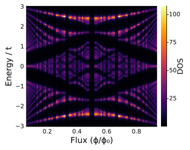
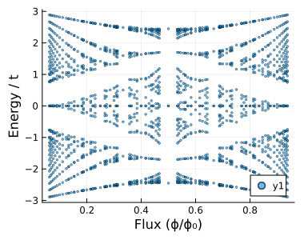

Tutorial 5 — Hofstadter Butterfly
Notebook: extra/tutorial/Tutorial5_Hofstadter.ipynb
Study electrons on lattices subjected to uniform magnetic flux and observe the fractal Hofstadter spectrum.
Learning goals
- Thread magnetic flux through lattice models via Peierls phases or flux attachment helpers.
- Sample dense momentum grids needed to resolve butterfly structures.
- Generate high-resolution spectral plots and density-of-states traces.
- Explore parameter sweeps (flux, onsite energies) to map fine structure.
Prerequisites
- Tutorials 1–2 (lattice construction and band plotting).
- Patience for longer runs—dense k-meshes can take minutes to hours depending on resolution.
Workflow outline
- Flux insertion — Employ helper routines to add phase factors to hopping terms (see
Operatorsutilities within the notebook). - Sampling strategy — Choose grid sizes (
klin,kperp, etc.) and tolerances; consider batching to avoid memory spikes. - Spectrum calculation — Use
Spectrum.getbandsor custom sparse solvers to compute eigenvalues across flux values. - Visualisation — Plot energy vs. flux butterflies, optionally overlaying integrated density-of-states or gap labelling.
- Data export — Store arrays for later inspection; the notebook saves
.h5/.jld2files for in-depth analysis.
Live example
figdir = joinpath(pwd(), "figures")
mkpath(figdir)
nothingϕs, dos = Operators.hofstadter_dos(
hops,
lat,
16,
collect(energies);
klin=36,
Γ=0.04
)
println("Density of states grid size = ", size(dos))
nothing
Iterating through flux... 3%|▋ | ETA: 0:02:23
Iterating through flux... 19%|████▊ | ETA: 0:00:24
Iterating through flux... 58%|██████████████▌ | ETA: 0:00:06
Iterating through flux... 100%|█████████████████████████| Time: 0:00:09
Density of states grid size = (120, 79)p = heatmap(
ϕs,
energies,
dos;
xlabel="Flux (ϕ/ϕ₀)",
ylabel="Energy / t",
colorbar_title="DOS",
size=(380, 300)
)
savefig(p, joinpath(figdir, "hofstadter_dos.svg"))
nothing
Γ-point spectrum versus flux
flux_list, energies = Operators.hofstadter(hops, lat, 16)
p = scatter(
[float(ϕ) for (ϕ, e) in zip(flux_list, energies) for _ in e],
[e for es in energies for e in es];
ms=1.5,
alpha=0.6,
xlabel="Flux (ϕ/ϕ₀)",
ylabel="Energy / t",
size=(380, 300)
)
savefig(p, joinpath(figdir, "hofstadter_gamma.svg"))
nothing
Iterating through flux... 6%|█▋ | ETA: 0:00:35
Iterating through flux... 14%|███▌ | ETA: 0:00:29
Iterating through flux... 22%|█████▍ | ETA: 0:00:26
Iterating through flux... 29%|███████▎ | ETA: 0:00:23
Iterating through flux... 37%|█████████▏ | ETA: 0:00:20
Iterating through flux... 44%|███████████▏ | ETA: 0:00:18
Iterating through flux... 52%|█████████████ | ETA: 0:00:15
Iterating through flux... 59%|██████████████▉ | ETA: 0:00:13
Iterating through flux... 67%|████████████████▊ | ETA: 0:00:10
Iterating through flux... 75%|██████████████████▋ | ETA: 0:00:08
Iterating through flux... 82%|████████████████████▋ | ETA: 0:00:06
Iterating through flux... 90%|██████████████████████▌ | ETA: 0:00:03
Iterating through flux... 97%|████████████████████████▍| ETA: 0:00:01
Iterating through flux... 100%|█████████████████████████| Time: 0:00:31
Validation checklist
- Confirm the butterfly reproduces standard graphene features at rational flux values.
- Check that saved data sizes line up with grid dimensions.
- Compare with reference plots in literature for sanity.
Suggested extensions
- Cross-link results with linear-response calculations for quantised Hall conductance.
- Introduce disorder or interaction effects using
MeanfieldorSuperconductivity. - Automate meshes via
extra/examples/graphene/hofstadter.jlfor scripted runs.